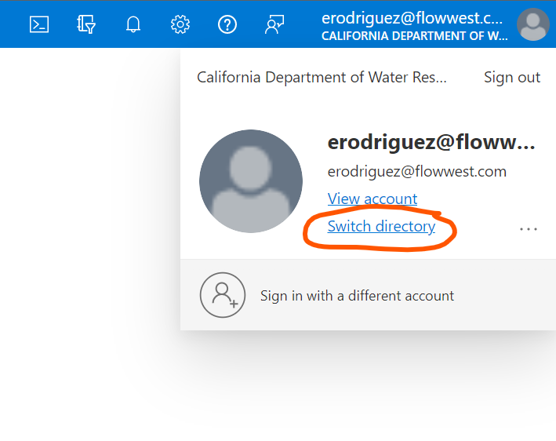
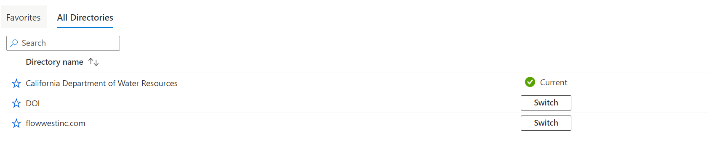
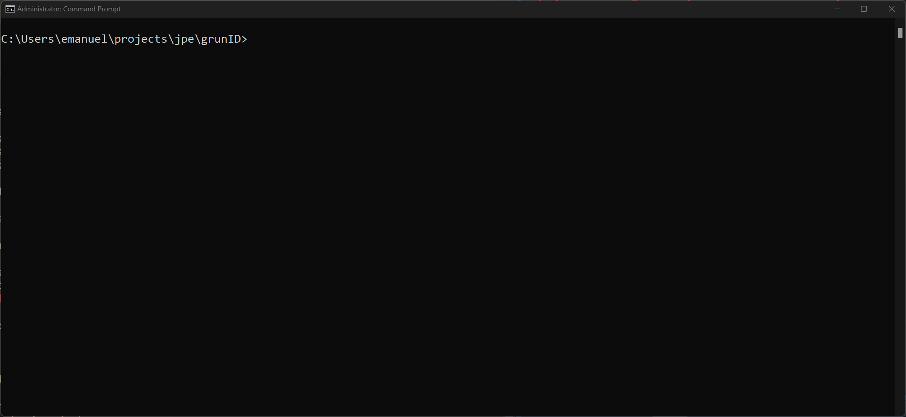
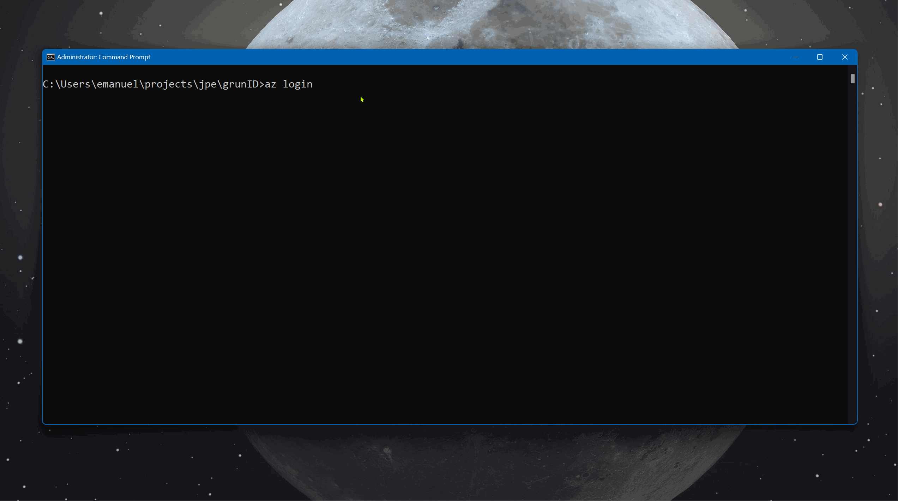

Authentication with Azure AD
azure-authentication.Rmd
library(grunID)Confirm Account on Azure
The first step in the process is to confirm that your account has been successfully linked to Azure. To do this, navigate to the Microsoft Azure Portal and log in with your existing credentials or create a new one. Once logged in, click on your account.

Next click on Switch Directory

and confirm you have a directory for the California Department of Water Resources. If you are not already switched to this directory do so now. If you do not see this directory contact Emanuel Rodriguez at erodriguez@flowwest.com for help.

Install Depedencies
In addition to installing the R package, we need to install the Azure Command Line Interface (CLI) to authenticate through Azure Directory. The Azure CLI allows us to link a local R session with your Azure AD account and authenticate a user with read/write permissions to the database using a “token”. An overview of the tool can be found at https://learn.microsoft.com/en-us/cli/azure/. To download and install the tool, visit the Install Azure CLI on Windows page, or for Mac OS visit the Install for Mac OS page.
Authentication with AZ tool
The next set of steps require opening a command prompt. On Windows, this can be done by searching for “command prompt” in the start menu, or by right-clicking the Start button and selecting “Windows PowerShell” or “Windows Command prompt” from the pop-up menu. We should see a blank screen.

Log in with AZ
Next, we’ll want to log in to Azure from the command line. To do this, simply enter the following at the command prompt. After pressing enter, an internet browser will open where you can log into your Azure account. If you have already logged in on the previous step, this will simply allow you to select an account to use.
az login
Create a Token
Next, we’ll use AZ again to create a “token” that will allow us to authenticate using our username on Azure. Enter the following in command prompt:
az account get-access-token --resource-type oss-rdbmsThis will return a json formatted response with the following content:
{
"accessToken": "really long string of letters, numbers and symbols, this will be used as your password",
"expiresOn": "2023-01-19 12:01:26.000000",
"subscription": "a subscription ID",
"tenant": "a tenant ID",
"tokenType": "Bearer"
}Note that for security purposes, these tokens have a short expiration date of just a few hours. FlowWest is currently working on switching to using refresh tokens, which will allow for automatic token creation and authentication. Until then, however, you will need to manually update this token by repeating this and the following step.
Create a config file
Next, we’ll create a config.yml file to store our
credentials. The file must be named config.yml and
placed within the R working directory that you plan to use for
interacting with the database. The file should have the following
contents, the password field should be filled in with the token
generated in the previous step. The remaining fields will be provided to
you.
Note that if you are repeating this step to refresh an expired token, you simply have to replace the existing password value with your new token and re-read this file into the R session.
default:
dbname: <db-name will be provided>
username: <your-username will be provided>
port: <db-port will be provided>
host: <db-host will be provided>
password: <paste token from previous step here>